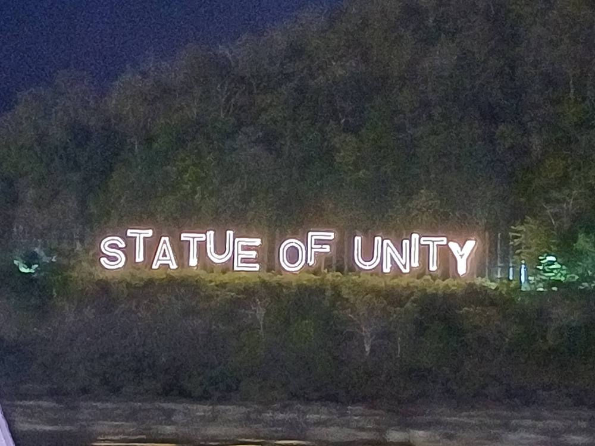
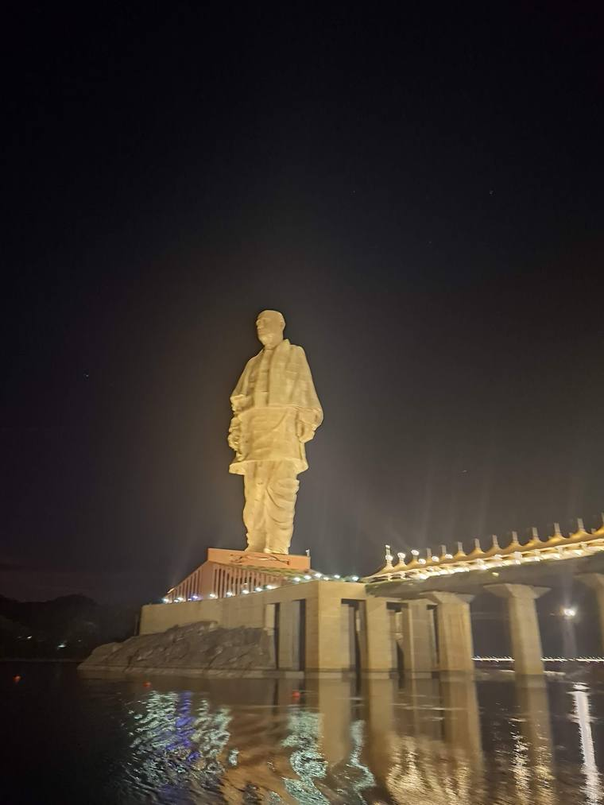
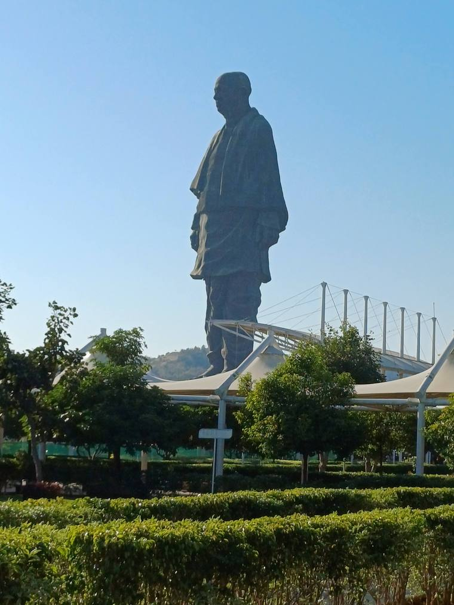

Travel · Draft
Standing in front of the Statue of Unity
One or two sentences: why this visit, and what it was like to see it with the family.
- When
- December 2025
- Where
- Gujarat, India
- Who
- Who came along
- Length
- n days

- Starttravel
- Statue of Unitynights
- Next stopnights
Getting there
From where, how long, what the journey was like.
The statue
At 182 metres, the statue of Sardar Vallabhbhai Patel is the tallest in the world. What it is like to stand in front of it: the scale, the viewing gallery, the river.


Around it
What else we saw nearby, and what the family enjoyed most.
Coming home to India
What visiting India feels like when you live in Germany — family, food, the contrast.
What I’d tell another family
- Practical tip
- Practical tip